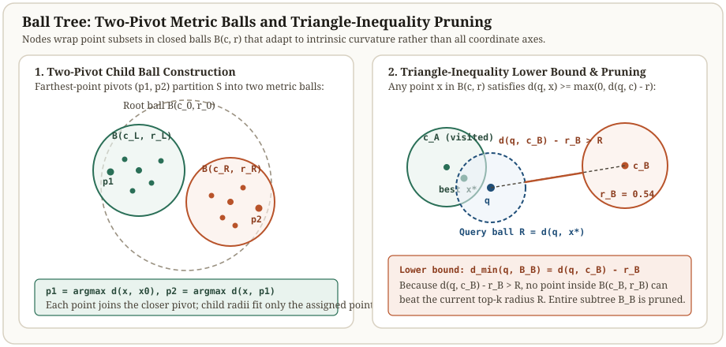

Ball trees: bound metric balls and prune with the triangle inequality
KD-trees slice one coordinate axis per level, so $d$ orthogonal axes require $d$ levels before every coordinate is halved once. Ball trees remove coordinate axes from the node invariant altogether: every node $u$ wraps its subset $S_u$ inside a closed metric ball $B(c_u, r_u) = \{x : d(x, c_u) \le r_u\}$ defined purely by pairwise distances.
Because the bounding shape is a hypersphere rather than an axis-aligned box, a single split can orient along a diagonal manifold across all $d$ coordinates simultaneously, and branch-and-bound pruning works under any distance $d(\cdot,\cdot)$ that satisfies the triangle inequality.
Prune a child ball with a single center-to-query distance
Six points on a diagonal manifold · two metric balls · one triangle-inequality check
Left ball $B_A$ has center $c_A=(1.5,1.5)$ and radius $r_A=\sqrt{0.5}\approx 0.7071$. Right ball $B_B$ has center $c_B=(8.5,8.5)$ and radius $r_B=\sqrt{0.5}\approx 0.7071$. For query $q=(2.2,1.8)$, visiting $B_A$ first finds $x_1=(2.0,1.5)$ at distance $R=\sqrt{0.13}\approx 0.3606$. The triangle inequality then proves $d(q,c_B)-r_B \approx 8.4896 > R$, pruning $B_B$ without inspecting any of its points.


Fixed query q = (2.2, 1.8). Left ball B_A has center (1.5, 1.5), r_A = 0.7071; right ball B_B has center (8.5, 8.5), r_B = 0.7071.
| Ball or point | Coordinates / center | Radius r | Euclidean d(q, center or point) | Lower bound d(q, c) - r |
|---|---|---|---|---|
| Ball B_A (visited first) | c_A = (1.5, 1.5) | 0.7071 | 0.7616 | 0.0545 (≤ inf) |
| x0 in B_A | (1.0, 1.0) | 0.0000 | 1.4422 | 1.4422 |
| x1 in B_A (best x*) | (2.0, 1.5) | 0.0000 | 0.3606 | 0.3606 (sets R) |
| x2 in B_A | (1.5, 2.0) | 0.0000 | 0.7280 | 0.7280 |
| Ball B_B (pruned) | c_B = (8.5, 8.5) | 0.7071 | 9.1967 | 8.4896 (> R = 0.3606) |
Scroll horizontally to compare the columns. Keyboard: focus the table, then use the left and right arrow keys.
Two-pivot construction and triangle-inequality bounds
Given a node subset $S_u$ of size $m = |S_u|$, computing the exact diameter takes $O(m^2 d)$ time. Instead, standard Ball Tree builders approximate the principal spread direction in $O(md)$ linear time with two farthest-point pivots:
Projecting $x \in S_u$ onto the chord $p_2 - p_1$ (or assigning each point to its closer pivot) partitions $S_u$ into $S_L$ and $S_R$. Note that while $S_L \cap S_R = \emptyset$, their bounding balls $B(c_L, r_L)$ and $B(c_R, r_R)$ are allowed to overlap in ambient space.
For any metric $d$ obeying $d(q, c_u) \le d(q, x) + d(x, c_u)$ and any $x \in B(c_u, r_u)$, we obtain a closed-form lower bound and upper bound on all points in $S_u$ from a single distance evaluation $d(q, c_u)$:
Why Ball Trees adapt to intrinsic manifold dimension
When embeddings lie near a smooth manifold or cluster hierarchy of intrinsic expansion dimension $d_{\text{int}} \ll d$, two-pivot splits automatically align with the chord $p_2 - p_1$ inside the data span. Verma, Kpotufe, and Dasgupta proved that Ball Tree splits halve the cell radius in $O(d_{\text{int}})$ tree levels regardless of the ambient dimension $d$.
| Property | KD-Tree | Ball Tree |
|---|---|---|
| Node bounding region | Axis-aligned hyperrectangle $[l_u, h_u] \subset \mathbb{R}^d$ | Closed metric ball $B(c_u, r_u)$ |
| Valid distance metrics | Coordinate-decomposable $L_p$ norms | Any metric obeying the triangle inequality (Euclidean, Haversine, cosine distance, Manhattan) |
| Node bound evaluation | $O(1)$ incremental update on the split coordinate | $O(d)$ distance computation $d(q, c_u) - r_u$ |
| Dimensional scaling | Governed by active coordinate axes ($d$) | Adapts to intrinsic manifold dimension ($d_{\text{int}}$) |
Verify Ball Tree construction and triangle-inequality pruning in Python
import math
import numpy as np
q = np.array([2.2, 1.8])
points = {
"x0": np.array([1.0, 1.0]),
"x1": np.array([2.0, 1.5]),
"x2": np.array([1.5, 2.0]),
"x3": np.array([8.0, 8.0]),
"x4": np.array([9.0, 8.5]),
"x5": np.array([8.5, 9.0]),
}
def l2(u, v):
return float(np.linalg.norm(u - v))
def make_ball(pids):
coords = np.stack([points[p] for p in pids])
center = coords.mean(axis=0)
radius = max(l2(points[p], center) for p in pids)
return {"pids": pids, "center": center, "radius": radius}
ball_a = make_ball(["x0", "x1", "x2"])
ball_b = make_ball(["x3", "x4", "x5"])
assert round(ball_a["radius"], 4) == 0.7071
assert round(ball_b["radius"], 4) == 0.7071
# Visit closer ball_a first
best_pid, best_dist = None, math.inf
for pid in ball_a["pids"]:
d = l2(q, points[pid])
if d < best_dist:
best_pid, best_dist = pid, d
lower_bound_b = max(0.0, l2(q, ball_b["center"]) - ball_b["radius"])
assert best_pid == "x1" and round(best_dist, 4) == 0.3606
assert round(lower_bound_b, 4) == 8.4896 and lower_bound_b > best_dist
print(f"Best in B_A: {best_pid} (R={best_dist:.4f}), B_B lower bound={lower_bound_b:.4f} -> pruned!")Check the operating assumptions
Why does raw cosine similarity fail as a Ball Tree pruning metric unless converted to angular or chord distance?
Raw cosine similarity s(u, v) and 1 - cos(u, v) do not satisfy the triangle inequality. Converting unit vectors to Euclidean chord distance ||u - v||_2 = sqrt(2 - 2 cos(u, v)) or angular distance arccos(u . v) restores the triangle inequality while preserving exact nearest-neighbor rank order.
Can two sibling balls in a Ball Tree overlap in space?
Yes. Each point is assigned to exactly one child subset, so the point sets are disjoint, but the minimum enclosing spheres B(c_L, r_L) and B(c_R, r_R) around those two subsets can intersect in ambient space.
When does a Ball Tree become slower than a KD-tree?
In low ambient dimensions (such as d = 2 or d = 3) where KD-tree bounding-box updates cost O(1) scalar arithmetic per node, whereas Ball Tree pruning computes an O(d) Euclidean norm d(q, c_u) at every visited internal node.
Sources
- Stephen M. Omohundro: Five Balltree Construction Algorithms, ICSI Technical Report TR-89-063, 1989.
- Dasgupta and Freund: Random Projection Trees and Low Dimensional Manifolds, STOC 2008.
- scikit-learn Documentation: BallTree and Metric Space Partitioning.